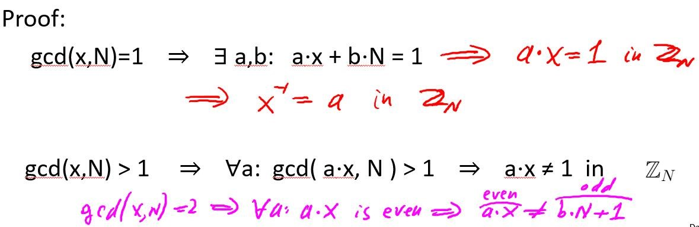
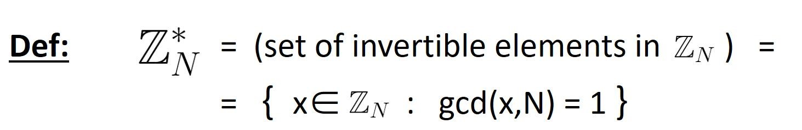

密码学相关数论
密码学是一门和数学联系非常紧密的学科，因为密码学相关论文，协议描述都涉及到数学问题，因此需要对一些基本的数论知识有一定的了解。
在叙述相关知识之前，需要先简单讲一些常见的数学符号，以及简单的群的概念和定理。
1. 群论：
群是由一种集合和一个二元运算组成的代数结构，并符合群公理。群公理包含以下四个性质，即封闭性，结合律，单位元，以及对集合中的所有元素都存在逆元素；(注意：群并不一定满足交换律，满足交换律的群称之为交换群或阿贝尔群）。
例如全体整数Z加上加法运算就是一个群，称之为整数加法群。
群(G, · )是由集合G和二元运算”·”构成的，其中，二元运算结合任何两个元素a和b而形成另一个元素，记为a·b，符号”·”是具体的运算，比如整数加法。
乘法群Zp*仅使用 1 和p - 1之间的整数（ p是素数），其基本运算是乘法。乘法以除以p的余数结束；这确保了关闭。
群G的阶就是群G中元素的个数，记为|G|。
2. 符号含义
现代的密码学机制都有相应的证明过程，而这些证明过程都是建立在离散概率上的，因此这里简单介绍一下离散概率的相关知识。
1）基本符号
N代表一个正数；p代表一个质数；
ZN = {0, 1, … , N-1)，表示一个有限群，群的阶是N，其上的二元运算都需要mod N；
2）b. 最大公共因子
gcd(x, y)代表整数x和y最大公共因子；最大公共因子的求解可以通过欧几里得算法进行计算；
定理：对于所有的整数x和y，一定存在a，b使得ax+by = gcd(x, y)；a和b的计算可以通过拓展欧几里得算法进行求解；
互质：如果整数x和y的最大公共因子是1，则称x和y互质；
3）模反元素
在正常运算中，2的倒数是1/2；但是在群ZN中，元素X的倒数被称为模反元素，X的模反元素Y满足X*Y = 1 （mod N）；
定理：并非群ZN中所有的元素都有模反元素，群ZN中元素X存在模范元素的充分必要条件是X和N要互质；
证明过程如下图：证明流程中，对任意的a，gcd(ax, N) > 1，所以ax ≠ 1 (mod N)；这是因为假设ax = kN+1，gcd(ax, N) = d，则N = pd， ax = qd = kpd+1，因此(kp-q)d = 1，而由于d是大于1的，因此推出矛盾，所以ax ≠ 1(mod N);

求解模反元素依然可以使用拓展欧几里得算法，其时间复杂度为O(log2 N)；
4）更多符号
ZN代表群ZN中所有存在模反元素的元素的集合；例如Z12 = {1, 5, 7, 11);

3. 费马小定理和欧拉定理
费马小定理
费马小定理是欧拉定理的一种特殊情况：设p是质数，则对于任意Zp*中的任意元素x，都有x^(p-1) = 1(mod p)；
利用费马小定理也能够求解模反元素，x^(p-2)就是x的模范元素，但是其运算效率是低于拓展欧几里得算法的；
循环群
Zp是一个循环群，即存在属于Zp的元素g使得（1, g, g^1, …, g^p-2) = Zp；g被称为Zp的生成器；例如对于Z7*，对应的生成器是3；
生成群及群的阶
对于g∈(Zp)* ，集合{1 , g , g2, g3, … } 被称为g的生成群，符号表示为
； g生成群的阶ordp(g)就是<g>中元素的个数，即满足g^a = 1的最小数a； 拉格朗日定理：ordp(g)能够整除p-1；欧拉定理
首先定理欧拉函数φ (N) = |(ZN)*|，即小于N并满足与N互质的数的个数；
对于N = p*q，且p和q都是质数，则φ(N) = N-p-q+1 = (p-1)*(q-1); 欧拉定理：对于ZN*中的任意元素x，x^φ(N) = 1 in ZN；
4. n阶模线性方程求解
1阶的模线性方程可以通过计算模反元素来求解，即a⋅x + b = 0 in ZN 解x = −b⋅a-1 in ZN；但是高阶模线性方程该如何求解呢？
高阶模线性方程需要计算高阶根才可以；如下定义x为c的e阶根；需要注意的是某些元素的一些高阶根并不存在；


对于不满足e和p-1互质的情况：
以2为例，p是一个奇素数，则2和p-1不是互质的；事实上，Zp*的二阶根是一个2-to-1的函数，即存在二阶根的元素都有两个二阶根，

定理：如果Zp的元素x有二阶根，则称x为二阶剩余(Q.R.)，对于奇素数p，Zp中Q.R.的数量为(p-1)/2+1；
定理：如果Zp*中与元素x是Q.R.，则x^(p-1)/2 = 1 in Zp；
定理：如果c ∈ Zp 是Q.R.，则c^1/2 = c^(p+1)/4 in Zp；*
5. 算数计算算法
数字在计算机上都是2进制表示，以其二进制位数代表数字的长度；
基本运算的算法复杂度
加减：O(n)
乘法：目前最优的是O(n.log(n))
除法：O(n2)
求幂的时间复杂度：O(n^2)
6. 数学上难以求解的问题：
DLOG：
已知g^x和g求解x是非常困难的；
离散椭圆曲线对数计算
大数的质因数分解问题